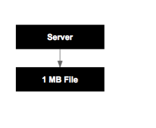

Go
A great language for modern web applications
@sebasporto
Why Go use for building web application?
Comparing it to Ruby and JS
It is fast
Bubble sort benchmark
# ruby
bubble.call([2, 10, 1, 9, 5, 6, 8, 3, 7, 4])
// JS
bubble([2, 10, 1, 9, 5, 6, 8, 3, 7, 4]);
// Go
arr := []int{2, 10, 1, 9, 5, 6, 8, 3, 7, 4}
bubble(arr)
It is fast!
190x faster than Ruby
Concurrency
Concurrency - Parallel requests

Concurrency - Parallel requests
Ruby
- Mutex and Threads :(
- EventMachine :(
Concurrency - Parallel requests
Node.js
var defX = Q.defer();
var defY = Q.defer();
var oneAndTwo = Q
.all([defX.promise, defY.promise])
.then(processConcat);
requestValue('/x', defX);
requestValue('/y', defY);
Concurrency - Parallel requests
Go
var cx chan string = make(chan string)
var cy chan string = make(chan string)
go requestValue("/x", cx)
go requestValue("/y", cy)
x := <-cx
y := <-cy
processConcat(x, y)
Concurrency - Memory Usage
Concurrency - Memory Usage
Node.js
var http = require('http')
var Buffer = require('buffer').Buffer;
var n = 1024*1024;
var b = new Buffer(n);
for (var i = 0; i < n; i++) b[i] = 100;
http.createServer(function (req, res) {
res.writeHead(200);
res.end(b);
}).listen(8100);
Concurrency - Memory Usage
Go
package main
import "net/http"
func main() {
bytes := make([]byte, 1024*1024)
for i := 0; i < len(bytes); i++ {
bytes[i] = 100
}
http.HandleFunc("/", func(w http.ResponseWriter, r *http.Request) {
w.Write(bytes)
})
http.ListenAndServe(":8100", nil)
}
Concurrency - Memory Usage
Node.js
# Run benchmark
ab -n 10000 -c 100 http://127.0.0.1:8100/
# Very likely to get this
FATAL ERROR: (...) process out of memory
Concurrency - Memory Usage
Go
ab -n 10000 -c 100 http://127.0.0.1:8100/
...
Time taken for tests: 20.689 seconds
Complete requests: 10000
...
# IT WORKS!
A lot more
- + Lightweight
- + Relatively easy to learn
- + Static Typing
- + Ultra Fast Compilation
- + Simple but flexible object system
- + All batteries included
- + Functions as first class

It is great alternative
Try it!
Thanks
@sebasporto